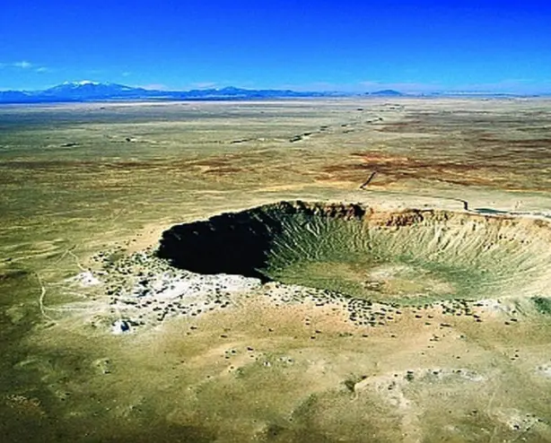
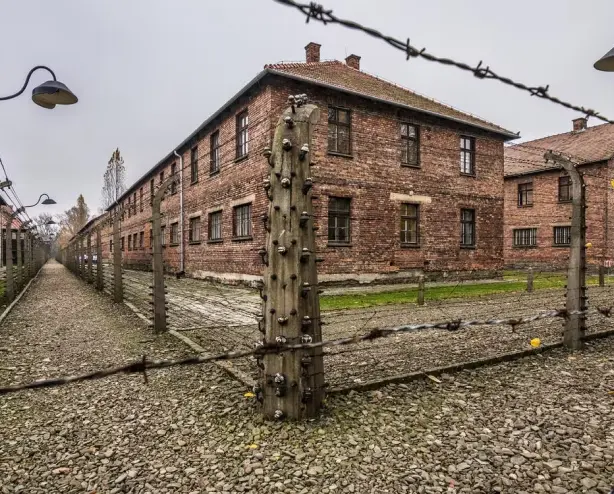
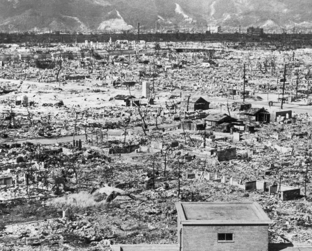
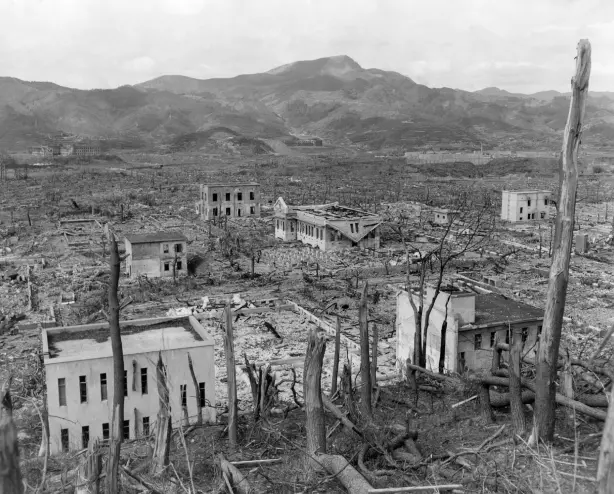

Le lieu inconnu de la première explosion nucléaire

Champ de tir d’Alamogordo

Commencement de la recherche nucléaire
Le champ de tir d’Alamogordo se situe au Nouveau-Mexique, près de la ville de Socorro. Ce lieu n’est pas très connu pourtant c’est ici qu’a eu lieu la première explosion nucléaire de l’histoire le 16 juillet 1945. En effet, on retient les bombes nucléaires larguées sur Hiroshima et Nagasaki (Fat Man et Little Boy). Mais c’est bien à Alamogordo qu’une bombe nucléaire a explosé pour la première fois sur Terre.
L’armée américaine s’est longtemps intéressée à l’armement nucléaire pour vaincre l’Allemagne et le Japon lors de la Seconde Guerre Mondiale. Le projet Manhattan a donc été lancé pour construire la première bombe atomique.
“Il y a eu un avant Trinity et un après Trinity.”
La première bombe nucléaire de l'histoire
Au bout de 6 années de recherche, le projet a finalement abouti au premier essai d’une arme atomique dont le nom de code est Trinity. Les chercheurs n’étaient cependant pas certains que cette arme atomique fonctionnerait. Ils ont donc cherché un lieu isolé et inhabité. Ils ont finalement choisi le champ de tir d’Alamogordo. Lors de Trinity, la bombe nucléaire, surnommée Gadget, a été lancée.
Son explosion a libéré une bulle de plasma de 266 mètres de diamètre et formé un immense cratère. Par la suite l’essai s’est révélé concluant et a validé le lancement de deux bombes sur Hiroshima puis Nagasaki. Le projet Manhattan a mobilisé plus de trente sites et aura coûté deux milliards de dollars américains aux États-Unis depuis son lancement en 1939.
Influence sur moi et conséquences sur le monde
C’est pour cela que le lancement de Trinity a entièrement été pris en photo et vidéo. Je me souviens avoir découvert ces images et vidéos en cours d’histoire au collège. Je ne me suis pas senti très bien après et je pense que ce devait être la même chose pour l’armée américaine.
Il y a eu un avant Trinity et un après Trinity. Le monde ne serait plus jamais le même. Il allait évoluer.
Lieux similaires
Les lieux présentés ont tous participé à l’évolution du monde. Leur impact a été grand et a durablement changé la société dans laquelle on vit.
- 65 millions
Cratère de Chicxulub, là où la météorite ayant probablement provoqué l’extinction des dinosaures a percuté la Terre
1940
Camp de concentration d’Auschwitz, principal endroit où les nazis ont exterminé les juifs, se rendant coupables de crime contre l’humanité
1945
Ville d’Hiroshima après l’explosion de la première bombe nucléaire à but de destruction
1945
Ville de Nagasaki après l’explosion de la deuxième bombe nucléaire à but de destruction
2001
World Trade Center subissant la première attaque terroriste sur le sol américain, déclenchement d’attaques terroristes partout dans le monde